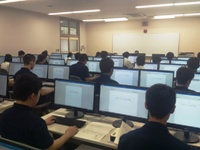

専門授業の実習教室
一人ずつPCを操作し、説明を聞くだけでなく、自分の手で試して結果を確かめる授業を行います。
環境と成果
プログラミングからグラフィック制作まで、情報の実習を支える教室の一つです。
一人ずつPCを操作し、説明を聞くだけでなく、自分の手で試して結果を確かめる授業を行います。
中間モニターへ操作手順を映し、生徒が自分の画面と見比べながら実習を進められます。
教員2人制の支援と画面共有を組み合わせ、操作の確認と個別支援を両立します。
「MM教室」では、作るものと必要なデータ形式を先に確認します。
「MM教室」では、文書、開発、画像、3Dに合う機器とソフトを使います。
「MM教室」では、中間モニターで教員と自分の画面を見比べます。
「MM教室」では、編集用と提出用を分け、続きから作業できる形にします。
「MM教室」は、性能を眺めるための設備ではありません。
「MM教室」では、どの授業で何を入力し、どの形式で保存・出力するかまでを一つの流れにします。
「MM教室」では、操作が違うときは、教員の画面と自分の画面を見比べます。
「MM教室」では、中間モニターと原則2名の教員による実習で、止まった場所を早く見つけます。
「MM教室」では、文書、プログラム、画像、3Dでは、必要なソフトとファイル形式が異なります。
「MM教室」では、一つの操作へ固定せず、作りたい成果から機器と機能を選びます。
「MM教室」では、元データと提出用データを分け、保存場所と名前をそろえます。
「MM教室」では、個人PCで使えるソフトは、学校の案内と利用条件に沿って設定します。
「MM教室」で身につけた操作を、「第1情報教室」や進学後の環境へつなげます。
「MM教室」では、画面の位置を丸暗記せず、目的から必要な機能を探せるようにします。
「MM教室」では、PCの台数だけでなく、画面共有、質問、保存、提出の流れを見てください。
「MM教室」では、個人PCの推奨条件、使えるソフト、授業外の利用方法も質問できます。


